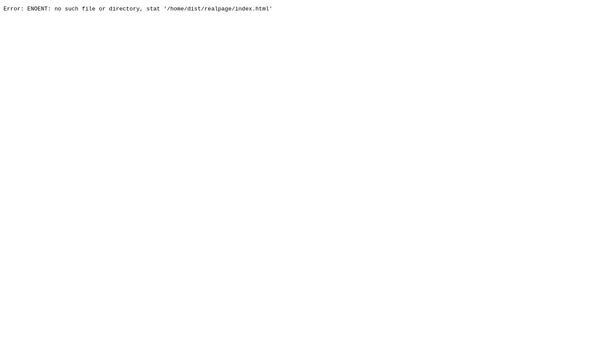
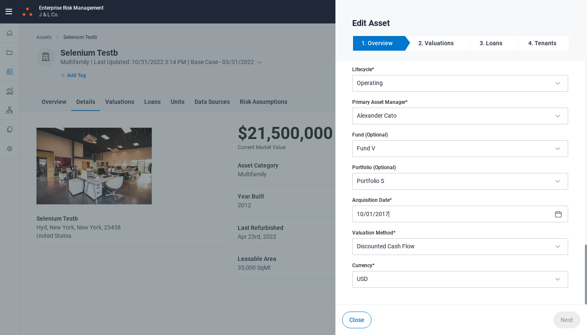
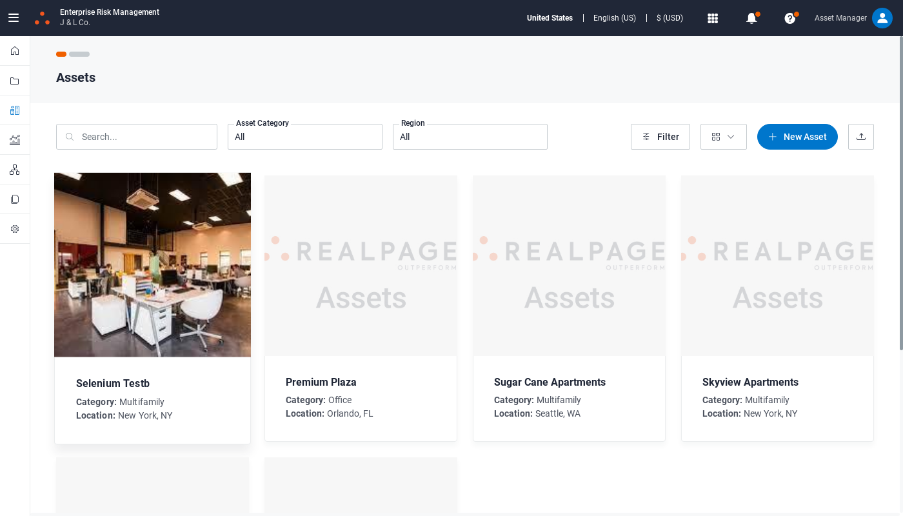
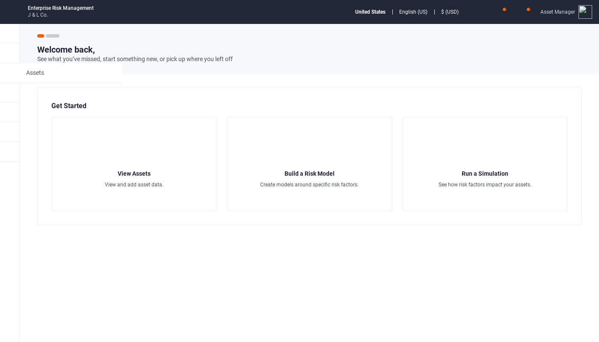
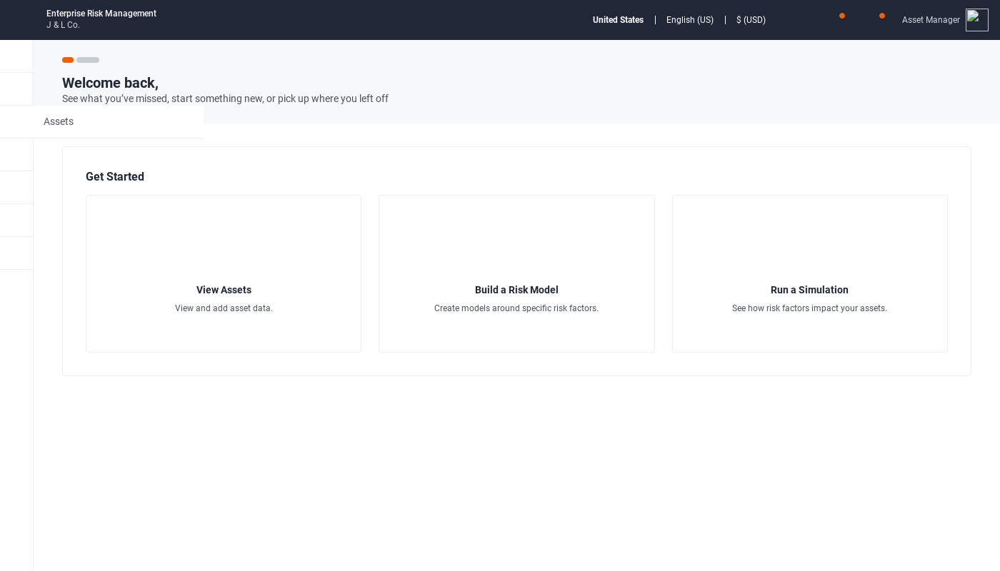

Started
Oct 31, 2022 04:22:06 PM
Ended
Oct 31, 2022 04:24:48 PM
Features Passed
0
Features Failed
1
Features
Scenarios
Steps
Timeline
-
EditAssetPage
16:22:08 PM / 00:02:40:709 Fail
EditAssetPage
10.31.2022 16:22:08 10.31.2022 16:24:48 00:02:40:709 · #test-id=1FailEditAssetPagePassEditAssetPageGiven Opens RealPage and user clicks on properties goes to a particular asset "Selenium Testb"When clicks on edit button and edit the values "" "" "" "" "" "" "" "" "" "" "Alexander Cato" "" "" "" "" "" "" "" "" ""Then check the updated values "" "" "" "" "" "" "" "" "" "" "Alexander Cato" "" "" "" "" "" "" "" "" "" "Successfully Updated Asset Details"PassEditAssetPageGiven Opens RealPage and user clicks on properties goes to a particular asset "Selenium Testb"When clicks on edit button and edit the values "" "" "" "" "New York" "" "" "" "" "" "" "" "" "" "" "" "" "" "" ""Then check the updated values "" "" "" "" "New York" "" "" "" "" "" "" "" "" "" "" "" "" "" "" "" "Successfully Updated Asset Details"PassEditAssetPageGiven Opens RealPage and user clicks on properties goes to a particular asset "Selenium Testb"When clicks on edit button and edit the values "" "" "United States" "" "" "" "" "" "" "" "" "" "" "" "" "" "" "" "" ""Then check the updated values "" "" "United States" "" "" "" "" "" "" "" "" "" "" "" "" "" "" "" "" "" "Successfully Updated Asset Details"PassEditAssetPageGiven Opens RealPage and user clicks on properties goes to a particular asset "Selenium Testb"When clicks on edit button and edit the values "" "" "" "" "" "" "23458" "" "" "" "" "" "" "" "" "" "" "" "" ""Then check the updated values "" "" "" "" "" "" "23458" "" "" "" "" "" "" "" "" "" "" "" "" "" "Successfully Updated Asset Details"PassEditAssetPageGiven Opens RealPage and user clicks on properties goes to a particular asset "Selenium Testb"When clicks on edit button and edit the values "" "" "" "" "" "" "" "" "" "21,500,000" "" "" "" "" "" "" "" "" "" ""Then check the updated values "" "" "" "" "" "" "" "" "" "21,500,000" "" "" "" "" "" "" "" "" "" "" "Successfully Updated Asset Details"PassEditAssetPageGiven Opens RealPage and user clicks on properties goes to a particular asset "Selenium Testb"When clicks on edit button and edit the values "" "" "" "Hyd" "" "" "" "" "" "" "" "" "" "" "" "" "" "" "" ""Then check the updated values "" "" "" "Hyd" "" "" "" "" "" "" "" "" "" "" "" "" "" "" "" "" "Successfully Updated Asset Details"PassEditAssetPageGiven Opens RealPage and user clicks on properties goes to a particular asset "Selenium Testb"When clicks on edit button and edit the values "" "" "" "" "" "" "" "" "Operating" "" "" "" "" "" "" "" "" "" "" ""Then check the updated values "" "" "" "" "" "" "" "" "Operating" "" "" "" "" "" "" "" "" "" "" "" "Successfully Updated Asset Details"PassEditAssetPageGiven Opens RealPage and user clicks on properties goes to a particular asset "Selenium Testb"When clicks on edit button and edit the values "" "" "" "" "" "" "" "Multifamily" "" "" "" "" "" "" "" "" "" "" "" ""Then check the updated values "" "" "" "" "" "" "" "Multifamily" "" "" "" "" "" "" "" "" "" "" "" "" "Successfully Updated Asset Details"PassEditAssetPageGiven Opens RealPage and user clicks on properties goes to a particular asset "Selenium Testb"When clicks on edit button and edit the values "" "" "" "" "" "New York" "" "" "" "" "" "" "" "" "" "" "" "" "" ""Then check the updated values "" "" "" "" "" "New York" "" "" "" "" "" "" "" "" "" "" "" "" "" "" "Successfully Updated Asset Details"PassEditAssetPageGiven Opens RealPage and user clicks on properties goes to a particular asset "Selenium Testb"When clicks on edit button and edit the values "" "sky" "" "" "" "" "" "" "" "" "" "" "" "" "" "" "" "" "" ""Then check the updated values "" "sky" "" "" "" "" "" "" "" "" "" "" "" "" "" "" "" "" "" "" "Successfully Updated Asset Details"FailEditAssetPageGiven Opens RealPage and user clicks on properties goes to a particular asset "Selenium Testb"When clicks on edit button and edit the values "" "" "" "" "" "" "" "" "" "" "" "Fund V" "" "" "" "" "" "" "" ""Step skippedThen check the updated values "" "" "" "" "" "" "" "" "" "" "" "Fund V" "" "" "" "" "" "" "" "" "Successfully Updated Asset Details"Step skippedapphooks.ApplicationHooks.tearDown(io.cucumber.java.Scenario)EditAssetPagePassEditAssetPageGiven Opens RealPage and user clicks on properties goes to a particular asset "Selenium Testb"When clicks on edit button and edit the values "" "" "" "" "" "" "" "" "" "" "" "" "Portfolio A" "" "" "" "" "" "" ""Then check the updated values "" "" "" "" "" "" "" "" "" "" "" "" "Portfolio A" "" "" "" "" "" "" "" "Successfully Updated Asset Details"FailEditAssetPageGiven Opens RealPage and user clicks on properties goes to a particular asset "Selenium Testb"When clicks on edit button and edit the values "" "" "" "" "" "" "" "" "" "" "" "" "" "10/01/2017" "" "" "" "" "" ""Then check the updated values "" "" "" "" "" "" "" "" "" "" "" "" "" "10/01/2017" "" "" "" "" "" "" "Successfully Updated Asset Details"Step skippedapphooks.ApplicationHooks.tearDown(io.cucumber.java.Scenario)EditAssetPageFailEditAssetPageGiven Opens RealPage and user clicks on properties goes to a particular asset "Selenium Testb"When clicks on edit button and edit the values "" "" "" "" "" "" "" "" "" "" "" "" "" "" "2012" "" "" "" "" ""Step skippedThen check the updated values "" "" "" "" "" "" "" "" "" "" "" "" "" "" "2012" "" "" "" "" "" "Successfully Updated Asset Details"Step skippedapphooks.ApplicationHooks.tearDown(io.cucumber.java.Scenario)EditAssetPageFailEditAssetPageGiven Opens RealPage and user clicks on properties goes to a particular asset "Selenium Testb"When clicks on edit button and edit the values "" "" "" "" "" "" "" "" "" "" "" "" "" "" "" "06/19/2021" "" "" "" ""Step skippedThen check the updated values "" "" "" "" "" "" "" "" "" "" "" "" "" "" "" "06/19/2021" "" "" "" "" "Successfully Updated Asset Details"Step skippedapphooks.ApplicationHooks.tearDown(io.cucumber.java.Scenario)EditAssetPage FailEditAssetPageGiven Opens RealPage and user clicks on properties goes to a particular asset "Selenium Testb"When clicks on edit button and edit the values "" "" "" "" "" "" "" "" "" "" "" "" "" "" "" "" "USD" "" "" ""Step skippedThen check the updated values "" "" "" "" "" "" "" "" "" "" "" "" "" "" "" "" "USD" "" "" "" "Successfully Updated Asset Details"Step skippedapphooks.ApplicationHooks.tearDown(io.cucumber.java.Scenario)EditAssetPage
FailEditAssetPageGiven Opens RealPage and user clicks on properties goes to a particular asset "Selenium Testb"When clicks on edit button and edit the values "" "" "" "" "" "" "" "" "" "" "" "" "" "" "" "" "USD" "" "" ""Step skippedThen check the updated values "" "" "" "" "" "" "" "" "" "" "" "" "" "" "" "" "USD" "" "" "" "Successfully Updated Asset Details"Step skippedapphooks.ApplicationHooks.tearDown(io.cucumber.java.Scenario)EditAssetPage FailEditAssetPageGiven Opens RealPage and user clicks on properties goes to a particular asset "Selenium Testb"When clicks on edit button and edit the values "" "" "" "" "" "" "" "" "" "" "" "" "" "" "" "" "" "SQMT" "" ""Step skippedThen check the updated values "" "" "" "" "" "" "" "" "" "" "" "" "" "" "" "" "" "SQMT" "" "" "Successfully Updated Asset Details"Step skippedapphooks.ApplicationHooks.tearDown(io.cucumber.java.Scenario)EditAssetPageFailEditAssetPageGiven Opens RealPage and user clicks on properties goes to a particular asset "Selenium Testb"When clicks on edit button and edit the values "" "" "" "" "" "" "" "" "" "" "" "" "" "" "" "" "" "" "35,000" ""Step skippedThen check the updated values "" "" "" "" "" "" "" "" "" "" "" "" "" "" "" "" "" "" "35,000" "" "Successfully Updated Asset Details"Step skippedapphooks.ApplicationHooks.tearDown(io.cucumber.java.Scenario)EditAssetPage
FailEditAssetPageGiven Opens RealPage and user clicks on properties goes to a particular asset "Selenium Testb"When clicks on edit button and edit the values "" "" "" "" "" "" "" "" "" "" "" "" "" "" "" "" "" "SQMT" "" ""Step skippedThen check the updated values "" "" "" "" "" "" "" "" "" "" "" "" "" "" "" "" "" "SQMT" "" "" "Successfully Updated Asset Details"Step skippedapphooks.ApplicationHooks.tearDown(io.cucumber.java.Scenario)EditAssetPageFailEditAssetPageGiven Opens RealPage and user clicks on properties goes to a particular asset "Selenium Testb"When clicks on edit button and edit the values "" "" "" "" "" "" "" "" "" "" "" "" "" "" "" "" "" "" "35,000" ""Step skippedThen check the updated values "" "" "" "" "" "" "" "" "" "" "" "" "" "" "" "" "" "" "35,000" "" "Successfully Updated Asset Details"Step skippedapphooks.ApplicationHooks.tearDown(io.cucumber.java.Scenario)EditAssetPage FailEditAssetPageGiven Opens RealPage and user clicks on properties goes to a particular asset "Selenium Testb"When clicks on edit button and edit the values "" "" "" "" "" "" "" "" "" "" "" "" "" "" "" "" "" "" "" "Discounted Cash Flow"Step skippedThen check the updated values "" "" "" "" "" "" "" "" "" "" "" "" "" "" "" "" "" "" "" "Discounted Cash Flow" "Successfully Updated Asset Details"Step skippedapphooks.ApplicationHooks.tearDown(io.cucumber.java.Scenario)EditAssetPage
FailEditAssetPageGiven Opens RealPage and user clicks on properties goes to a particular asset "Selenium Testb"When clicks on edit button and edit the values "" "" "" "" "" "" "" "" "" "" "" "" "" "" "" "" "" "" "" "Discounted Cash Flow"Step skippedThen check the updated values "" "" "" "" "" "" "" "" "" "" "" "" "" "" "" "" "" "" "" "Discounted Cash Flow" "Successfully Updated Asset Details"Step skippedapphooks.ApplicationHooks.tearDown(io.cucumber.java.Scenario)EditAssetPage FailEditAssetPageGiven Opens RealPage and user clicks on properties goes to a particular asset "Selenium Testb"When clicks on edit button and edit the values "Selenium Testa" "" "" "" "" "" "" "" "" "" "" "" "" "" "" "" "" "" "" ""Step skippedThen check the updated values "Selenium Testa" "" "" "" "" "" "" "" "" "" "" "" "" "" "" "" "" "" "" "" "Successfully Updated Asset Details"Step skippedapphooks.ApplicationHooks.tearDown(io.cucumber.java.Scenario)EditAssetPage
FailEditAssetPageGiven Opens RealPage and user clicks on properties goes to a particular asset "Selenium Testb"When clicks on edit button and edit the values "Selenium Testa" "" "" "" "" "" "" "" "" "" "" "" "" "" "" "" "" "" "" ""Step skippedThen check the updated values "Selenium Testa" "" "" "" "" "" "" "" "" "" "" "" "" "" "" "" "" "" "" "" "Successfully Updated Asset Details"Step skippedapphooks.ApplicationHooks.tearDown(io.cucumber.java.Scenario)EditAssetPage
-
org.openqa.selenium.NoSuchElementException
1 tests
org.openqa.selenium.NoSuchElementException
1 failedStatus Timestamp TestName Fail 16:22:59 PM Given Opens RealPage and user clicks on properties goes to a particular asset "Selenium Testb" EditAssetPage.EditAssetPage.Given Opens RealPage and user clicks on properties goes to a particular asset "Selenium Testb"Fail 16:23:19 PM Given Opens RealPage and user clicks on properties goes to a particular asset "Selenium Testb" EditAssetPage.EditAssetPage.Given Opens RealPage and user clicks on properties goes to a particular asset "Selenium Testb"Fail 16:23:19 PM Given Opens RealPage and user clicks on properties goes to a particular asset "Selenium Testb" EditAssetPage.EditAssetPage.Given Opens RealPage and user clicks on properties goes to a particular asset "Selenium Testb"Fail 16:23:16 PM Given Opens RealPage and user clicks on properties goes to a particular asset "Selenium Testb" EditAssetPage.EditAssetPage.Given Opens RealPage and user clicks on properties goes to a particular asset "Selenium Testb"Fail 16:23:20 PM Given Opens RealPage and user clicks on properties goes to a particular asset "Selenium Testb" EditAssetPage.EditAssetPage.Given Opens RealPage and user clicks on properties goes to a particular asset "Selenium Testb"Fail 16:23:23 PM Given Opens RealPage and user clicks on properties goes to a particular asset "Selenium Testb" EditAssetPage.EditAssetPage.Given Opens RealPage and user clicks on properties goes to a particular asset "Selenium Testb"Fail 16:23:26 PM Given Opens RealPage and user clicks on properties goes to a particular asset "Selenium Testb" EditAssetPage.EditAssetPage.Given Opens RealPage and user clicks on properties goes to a particular asset "Selenium Testb"Fail 16:23:26 PM Given Opens RealPage and user clicks on properties goes to a particular asset "Selenium Testb" EditAssetPage.EditAssetPage.Given Opens RealPage and user clicks on properties goes to a particular asset "Selenium Testb"Fail 16:23:26 PM When clicks on edit button and edit the values "" "" "" "" "" "" "" "" "" "" "" "" "" "10/01/2017" "" "" "" "" "" "" EditAssetPage.EditAssetPage.When clicks on edit button and edit the values "" "" "" "" "" "" "" "" "" "" "" "" "" "10/01/2017" "" "" "" "" "" ""